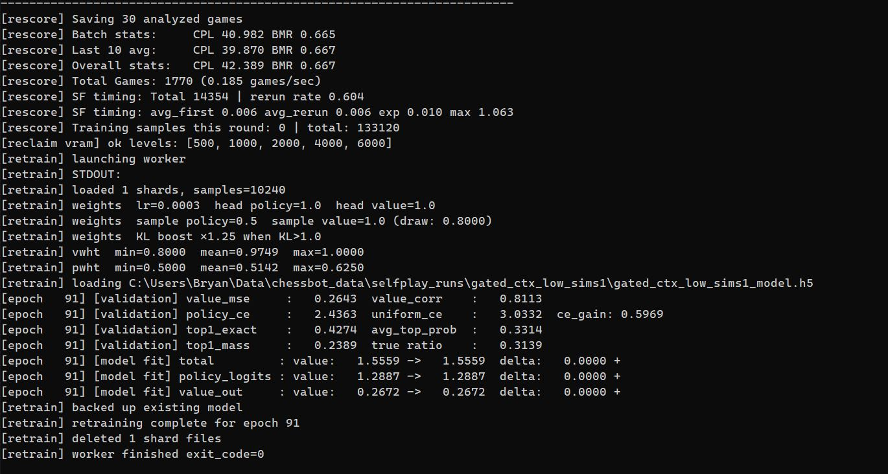

Rescoring & Retraining
Rescoring Overview
After a game finishes, it isn't used for training directly. The raw selfplay data contains noisy outcome labels and visit distributions that reflect the current (imperfect) model. The Rescorer processes each finished game asynchronously, runs Stockfish analysis on every position, and builds cleaner training targets before anything reaches the training queue.
SF Analysis Pipeline
Each game pickle contains the full move history and per-ply NN outputs. Rescorer.start_game() iterates through the plies and submits positions to the Stockfish queue for analysis. Results come back asynchronously via handle_sf_result(), which stores the best move, centipawn evaluation, and WDL triple for each ply.
Stockfish results are cached in SFCache — an LRU cache keyed on a short FEN (position + repetition count + halfmove clock). The cache is seeded from pre-computed depth-20 analysis at run start, so common positions in the opening and early middlegame are already resolved without queuing live SF queries. Entries are evicted when the cache exceeds rescore_cache_size.
Training Targets
The value target for each ply is a blended 3-component WDL:
Y = 0.5 * z_wdl + 0.25 * search_wdl + 0.25 * sf_wdl
where z_wdl is the game result converted to WDL, search_wdl is the MCTS tree's WDL at that ply, and sf_wdl is Stockfish's WDL. When SF analysis is unavailable for a ply, the SF component falls back to the search WDL. This blending keeps the targets grounded in the actual game outcome while pulling them toward a stronger signal.
Blunder Detection and Visit Redistribution
After SF analysis is complete, finalize_game() scans each ply for blunders — positions where Stockfish rates the played move significantly worse than its best move. When a blunder is detected, the visit distribution used as the policy target is redistributed: visits are shifted toward the moves SF considers good, reducing the weight on the blundered line. This prevents the model from learning to confidently play moves that Stockfish rates as mistakes.
Positions containing blunders are also candidates for replay games — new selfplay games starting from the blundered position — which puts more data on the positions the model is currently weakest on.
Collar Rescoring
The eval collar tracks consecutive plies where one side's evaluation stays above a threshold. When the collar fires, it retroactively adjusts the game result label for the affected stretch of plies, overriding the final game outcome with the collar evaluation. This corrects for cases where a clearly winning position was eventually drawn or lost due to adjudication noise or model error, keeping the value targets honest about who was winning at each point in the game.
Sample Acceptance
Not all positions from a game are included in training. Each ply is evaluated against three acceptance criteria:
- KL divergence — KL between the NN's prior and the final visit distribution. High KL means the search significantly disagreed with the network's first guess, making the position informative.
- Value CE — cross-entropy between the NN's WDL output and Stockfish's WDL. High CE means the model's value estimate was wrong on this position.
- CPL — centipawn loss of the played move vs Stockfish best. High CPL flags positions where a suboptimal move was played, worth learning from.
Positions that exceed any threshold are accepted unconditionally. Those that fall below all thresholds are soft-sampled with probability proportional to max(kl/kl_t, ce/ce_t), with a floor of rescore_sample_floor. This concentrates training data on informative positions while keeping a baseline of easy positions to maintain calibration.
Retraining

Retraining runs as a subprocess (retrain_worker.py) rather than inline. The reason is straightforward: on an 8GB GPU, selfplay inference and model training can't share VRAM comfortably. Running training in a subprocess means its GPU memory is fully released when the process exits, and the workers can resume with a clean VRAM state.
The flow: the orchestrator pauses all workers, signals the retrain subprocess, and waits. The subprocess loads the accumulated training shards from pending_training/, trains for one epoch with the configured batch size, saves the updated model, and exits. The orchestrator then broadcasts the new model path, workers reload and recompile their inference function, and selfplay resumes.
The retrain view shows per-epoch metrics:
- value CE — cross-entropy of the model's WDL predictions against the blended training targets.
- value correlation — Pearson correlation between predicted and target scalar values (
win - loss). Tracks whether the model's ordinal ranking of positions improves even when absolute calibration is noisy. - policy CE — cross-entropy of policy logits against the rescored visit distribution targets.
- top-1 accuracy — fraction of positions where the model's top policy move matches the training target's top move.
- CE gain vs uniform — policy CE improvement over a uniform distribution baseline, measuring how much the model has learned to concentrate probability on good moves.